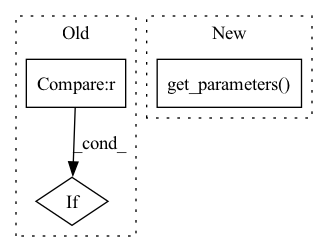

Pattern ID :36571
Before Change
num_workers=args.workers)
train_source_iter = ForeverDataIterator(train_source_loader)
train_target_iter = ForeverDataIterator(train_target_loader)
if args.iters_per_epoch is None :
iters_per_epoch = max(len(train_source_loader), len(train_target_loader))
else:
iters_per_epoch = args.iters_per_epochAfter Change
classifier = torch.nn.DataParallel(classifier).cuda()
// define optimizer and lr_scheduler
optimizer = SGD(classifier.module.get_parameters() , args.lr, momentum=args.momentum, weight_decay=args.wd, nesterov=True)
lr_scheduler = StepwiseLR(optimizer, init_lr=args.lr, gamma=0.0002, decay_rate=0.75)
// start trainingIn pattern: SUPERPATTERN
Frequency: 3
Non-data size: 3
Instances Fragment ID: 103934139
Project Name: thuml/transfer-learning-library
Commit Name: 540d571d6454ca34ee2687a3fb6a2e63e27be111
Time: 2020-03-16
Author: JiangJunguang1123@outlook.com
File Name: examples/mdd.py
M Class Name: AnonimousClass
N Class Name: AnonimousClass
M Method Name: main(1)
N Method Name: main(1)
M Parent Class:
N Parent Class:
M File Name: examples/mdd.py
N File Name: examples/mdd.py
M Start Line: 42
M End Line: 96
N Start Line: 40
N End Line: 100
Before Change
kwargs = {
name: getattr(dataset, name)
for name in inspect.signature(TimeSeriesDataSet).parameters.keys()
if name != "data"
}
kwargs["categoricals_encoders"] = dataset.categoricals_encoders
kwargs["scalers"] = dataset.scalers
if predict:After Change
cls, dataset, data: pd.DataFrame, stop_randomization: bool = True, predict: bool = True, **update_kwargs
):
return cls.from_parameters(
dataset.get_parameters() , data, stop_randomization=stop_randomization, predict=predict, **update_kwargs
)
@classmethod Fragment ID: 103934138
Project Name: jdb78/pytorch-forecasting
Commit Name: 03894c27b35a5f1f0fdd5bc7dc874bae1530515c
Time: 2020-07-17
Author: beitner.jan@bcg.com
File Name: pytorch_forecasting/data.py
M Class Name: TimeSeriesDataSet
N Class Name: TimeSeriesDataSet
M Method Name: from_dataset(5)
N Method Name: from_dataset(4)
M Parent Class: Dataset
N Parent Class: Dataset
M File Name: pytorch_forecasting/data.py
N File Name: pytorch_forecasting/data.py
M Start Line: 231
M End Line: 247
N Start Line: 249
N End Line: 253
Before Change
num_workers=args.workers)
train_source_iter = ForeverDataIterator(train_source_loader)
train_target_iter = ForeverDataIterator(train_target_loader)
if args.iters_per_epoch is None :
iters_per_epoch = max(len(train_source_loader), len(train_target_loader))
else:
iters_per_epoch = args.iters_per_epochAfter Change
classifier = torch.nn.DataParallel(classifier).cuda()
// define optimizer and lr_scheduler
optimizer = SGD(classifier.module.get_parameters() , args.lr, momentum=args.momentum, weight_decay=args.wd, nesterov=True)
lr_scheduler = StepwiseLR(optimizer, init_lr=args.lr, gamma=0.0002, decay_rate=0.75)
// start training Fragment ID: 103934140
Project Name: thuml/transfer-learning-library
Commit Name: a5d345dfccf4fe0912edb7566476bf26cf0a9ac0
Time: 2020-03-16
Author: JiangJunguang1123@outlook.com
File Name: examples/mdd.py
M Class Name: AnonimousClass
N Class Name: AnonimousClass
M Method Name: main(1)
N Method Name: main(1)
M Parent Class:
N Parent Class:
M File Name: examples/mdd.py
N File Name: examples/mdd.py
M Start Line: 42
M End Line: 96
N Start Line: 40
N End Line: 100